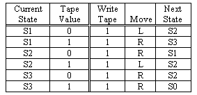
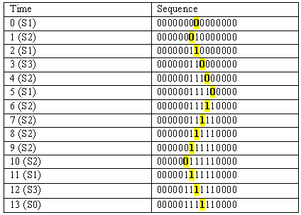
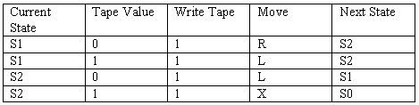

Problem 1. In lecture, we saw an enumeration of FSMs having the property that every FSM that can be built is equivalent to some FSM in that enumeration.
-
We didn't deal with FSMs having different numbers of inputs and
outputs. Where will we find a 5-input, 3-output FSM in our
enumeration?
We find a 5-input, 5-output FSM and don't use the extra outputs.
-
Can we also enumerate finite combinational logic functions? If so,
describe such an enumeration; if not, explain your reasoning.
Yes. One approach is to enumerate ROMs, in much the same way as we did for the logic in our FSMs. For single-output functions, we can enumerate 1-input truth tables, 2-input truth tables, etc. This can clearly be extended to multiple outputs, as was done in lecture. An alternative approach is to enumerate (say) all possible acyclic circuits using 2-input NAND gates.
-
Why do 6-3s think they own this enumeration trick? Can we come
up with a scheme for enumerating functions of continuous variables,
e.g. an enumeration that will include things like sin(x), op amps,
etc?
No. The thing that makes enumeration work is the finite number of combination functions there are for each number of inputs. There are only 16 2-input combinational functions; but there are infinitely many continuous 2-input functions. This makes enumeration impossible.
Problem 2. We saw that certain functions, such as parentheses checking, cannot be performed by any finite state machine. Which of the following can be performed by an FSM? Assume, in each case, that the device is to take a series of 0s and 1s that represent the digits of a binary number entered left-to-right. The device is to have a single output, which is 1 only under the specified conditions:-
 When the last 277 digits entered have been alternate 1s and 0s.
Yes. Its a bit tedious for 277 digits, but you should be able to sketch one for 3 or 4 digits.
When the last 277 digits entered have been alternate 1s and 0s.
Yes. Its a bit tedious for 277 digits, but you should be able to sketch one for 3 or 4 digits.-
When more 0s than 1s have been entered.
No. Requires unbounded counting.
-
When the number entered thus far is divisible by 3.
Yes, can be done by a 3-state machine.
-
When an odd number of 1s and and even number of 0s have been entered.
Yes, simple exercise.
-
When the number entered corresponds to a year in which the
Red Sox win the world series.
(Easy answer: always 0!). Assuming there are a bounded number of such years (otherwise, dream on...) its easy to design such an FSM from a list of the years.
Problem 3. Recall that we refer to a Turing machine's tape configuration as bounded if all 1s recorded on the tape are within some finite distance from the initial head position. We saw in lecture that every bounded tape configuration can be viewed as an encoding of a binary number, and that a TM can be said to compute the integer function f if, for every n, starting that TM with a tape encoding n will result in its halting with the tape encoding f(n).-
Given TMs that compute f(x) and g(x), respectively, describe how to
construct a TM that computes f(g(x)).
Since TMs differ only in their FSMs, we need show only how to construct the FSM for the new TM. To do so, we make a new state transition diagram which incorporates the STDs of both machines. However, we replace the Halt state of the machine that computes g(x) with the initial state of the one computing f(x). The initial state of the new machine is the initial state of the g(x) machine, while its Halt state is the Halt state of the machine computing f(x). The resulting machine will perform the computation g(x) on its input, leaving the result (say, y) as its tape configuration, and then go on to perform f(y) which is left as the final tape configuration. Thus it computes f(g(x)).
Problem 4.-
Ben Bitdiddle's proposed Ph.D. thesis involves writing a program to
compute a function f(x) on a Cray supercomputer. Ben's advisor points
out that f cannot be computed on any Turing machine. Should Ben care?
Why?
If the function can't be computed on any Turing machine, then it can't be computed on any physically realizable machine that we know of. So Ben is out of luck... a Cray supercomputer isn't "super" in that sense.
-
Discouraged by your answer to the last question, Ben has turned his
attention to an alternative thesis topic. He now proposes to invent
the universal FSM, which will be to FSMs what a universal Turing
machine is to Turing machines. Ben's idea is to build an FSM that can
fed a sequence of inputs describing any other FSM and the inputs to
that FSM. The universal FSM would then emulate the behavior of the
described FSM on the specified inputs. Is Ben's idea workable? Why or
why not?
Unfortunately, the Universal FSM will have some fixed number (N) of states built into its design. So it won't have enough states to emulate machines with more than N states. Ben's idea isn't workable.
Problem 5. We saw in lecture that the function Halts(k, j) which determines whether TM k halts with the argument j is uncomputable. For each of the following functions, describe whether that function is computable or not and explain your reasoning.-
HaltsBefore(k, j, s) = 1 if TM k halts with argument j within
s steps, else 0.
Computable, simply by simulating TMk[j] for s steps, much as a universal TM does.
-
HZero(k) which determines whether TM k halts with the argument
zero. Hence HZero(k) returns 1 iff TM k (0) halts, else 0.
[HINT: this is tricky].
Uncomputable. Let g(x, y) = i where i is the index of a TM which writes y on its tape and then executes the function of TM x on the result. Hence, starting with a blank (zero) input tape, TMi will compute the same result as TMx operating on input tape y. g(x, y) is clearly computable. If HZero is computable, then Halts(k, j) = HZero(g(k, j)). Since we know Halts is uncomputable, HZero must be as well.
-
H12345(x) which determines whether TM 12345 halts with the
argument 12345.
H12345(x) is a function that always returns true or always returns false, independently of its argument. In either case, the function is computable -- even if we can't determine which of these two choices is the correct definition.
-
Dow(y) = the final value of the Dow Jones average on the last
trading day of the year 2000+y, for y < 100 (and zero for y >= 100).
This function can be implemented as a simple table lookup given a 100-entry table. It is clearly computable, although we don't won't know what the values in the table are for another 100 years.
Problem 6. In the following problems consider a Turing machines with the following specifications. Each Turing machine has n states labeled {S1, S2, ..., Sn}, the Turing machine begins in state S1 and halts by transitioning to the special state S0, each cell of the Turing machine's tape can contain either a "1" or a "0", and each move of the Turing machine based solely on its current state and the value of the tape cell under the tape head. A move consists of first modifying the contents of the current tape cell under the head of the Turing machine, moving the tape either left, L, or right, R, followed by a transition to the next state. The following truth table defines the behavior of a Turing machine. Note that in this FSM the outputs are a function of both the current state and the tape value. -
How large a ROM is required to implement an n-state Turing machine
that adheres to the given specification (give the number of words and
the bits-per-word)?
There are n+1 states (including S0), which will take ceil{log2(n+1)} bits to encode. Adding the "Tape Value" input, there are ceil{log2(n+1)} + 1 inputs total, thus
2ceil{log2(n+1)}+1 = 2(n+1) rows in the ROM. Each row encodes a bit for "Write Tape", a bit for "Move", andceil{log2(n+1)} bits (counting S0) for the "Next State" for a total ofceil{log2(n+1)}+2 bits per row. Thus, the size of the ROM is2(n+1) x (ceil{log2(n+1)}+2) bits.-
Given an infinite tape (in both directions), with "0"s in every
cell. What will the Turing machine described by the truth table above
leave on the tape when it halts? Show the status of the tape in the
region around the head after each move.
The highlighted square represents the current position of the head. 
-
Design a 2-state Turing Machine that writes as many "1"s as possible
onto an all zero (in both directions) tape and then halts. Hint: you
can write four "1"s.
The following 2-state FSM can write 4 ones: 
-
Suppose that we choose to ignore the value of the cell under the read
head, thus turning our Turing machine into a finite-state machine. In
this case, how many "1"s can we write if the FSM has n states?
If we don't really care which direction we're writing in, and we want to write the largest (but finite) number of ones, an n state FSM can succeed only in writing n ones. The states essentially amount to a counter. An n state FSM can write an infinite number of ones (even if n=1), provided it wasn't required to halt.
Problem 7. "Extra Credit" -- hard problem. Given the uncomputability of the halting problem for arbitrary TMs, lets consider the halting problem for FSMs. Assume that Fi(x) is the ith FSM in our FSM enumeration, where the first input is given the successive binary digits of x from low-to-high order and zeros thereafter. Thus x represents an input sequence containing a bounded number of 1s. All other inputs to the FSM are tied to 0. We interpret the first output of the FSM as the "Halt" signal -- if it ever becomes 1, the computation stops and Fi(x) is said to halt.-
Consider the function FSMHalts(x, y) which returns 1 if Fx(y)
halts, else 0. Is FSMHalts a computable function?
Yes. We can simulate FSM x operating on input y. We have to detect loops somehow, to avoid having FSMHalts loop forever given a looping FSM. We can do this by keeping a record (as a list, requiring unbounded memory for arbitrary x) of every state in its history along with the remaining input at that point in its computation, and checking at every step whether we've ever been here before.
-
Consider the function FSMHalts(x, y) which returns 1 if Fx(y)
halts, else 0. Is FSMHalts a computable function?
-
Suppose that we choose to ignore the value of the cell under the read
head, thus turning our Turing machine into a finite-state machine. In
this case, how many "1"s can we write if the FSM has n states?
-
Design a 2-state Turing Machine that writes as many "1"s as possible
onto an all zero (in both directions) tape and then halts. Hint: you
can write four "1"s.
-
Given an infinite tape (in both directions), with "0"s in every
cell. What will the Turing machine described by the truth table above
leave on the tape when it halts? Show the status of the tape in the
region around the head after each move.
-
How large a ROM is required to implement an n-state Turing machine
that adheres to the given specification (give the number of words and
the bits-per-word)?
-
-
-
-
-
-
-
Given TMs that compute f(x) and g(x), respectively, describe how to
construct a TM that computes f(g(x)).
-
-
-
-
-
-
Why do 6-3s think they own this enumeration trick? Can we come
up with a scheme for enumerating functions of continuous variables,
e.g. an enumeration that will include things like sin(x), op amps,
etc?
-
Can we also enumerate finite combinational logic functions? If so,
describe such an enumeration; if not, explain your reasoning.